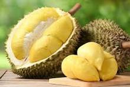

CÁCH LỰA CHỌN SẦU RIÊNG NGON
Chọn được một trái sầu riêng ngon, chất lượng là bước đầu tiên để thưởng thức trọn vẹn hương vị đặc trưng của loại trái cây này. Dưới đây là những mẹo giúp bạn lựa chọn sầu riêng ngon nhất:
Vua trái cây nhiệt đới – sầu riêng, luôn là loại trái cây "hot" và được săn lùng ráo riết trong mùa hè. Vậy phải làm sao để mua được một quả sầu riêng chín ngon, chất lượng và an toàn? Hãy cùng tìm hiểu 6 mẹo chọn sầu riêng sau đây nhé!
Mùi thơm của sầu riêng sẽ nồng hơn khi trái chín già. Mức lan tỏa của mùi cũng sẽ vô cùng mãnh liệt dù là ở khoảng cách khá xa. Nên chọn những quả có mùi thơm nồng nàn như vậy.
⚠️ Lưu ý: Sầu riêng ngâm hóa chất thường mùi rất nhạt, hoặc thậm chí là không có mùi, và mùi của chúng thường không được tự nhiên mà gây khó chịu cho khứu giác.
Âm thanh là một yếu tố để kiểm tra chất lượng của sầu riêng. Khi mua sầu riêng, bạn nên cầm quả sầu riêng lên lắc nhẹ, hoặc dùng cây khui sầu riêng gõ nhẹ vào thân quả.
Nếu quả phát ra tiếng "bịch bịch" hay "bộp bộp" chứng tỏ quả đó chắc nịch, cơm dày. Còn nếu âm thanh phát ra chát như "coong coong", có vẻ rỗng thì quả đấy hạt nhiều, ăn không ngon.
Quả sầu riêng chín cây sẽ có màu xanh rêu hay ửng một chút vàng nhạt. Còn nếu như chạm vào vỏ mà thấy có bột màu vàng kem thì đó là sầu riêng tẩm hoá chất bị ép chín. Vỏ sầu riêng có thể bị nứt, và thông qua lớp vỏ nứt đó, bạn hãy lấy tay nhấn nhẹ vào phần thịt để xác định là sầu riêng đã chín hay chưa (nếu chín phần thịt sẽ vàng, mềm và thơm). Sầu riêng chất lượng có màu vỏ xanh rêu hay ửng vàng nhạt.

Bạn nên chọn những quả sầu riêng có gai đầu hơi tròn, gai xanh to đều. Sầu riêng ngâm hoá chất sẽ có gai màu sậm, gai nhọn nhưng bị mềm do còn non và bị ép chín bằng thuốc. Gai sầu riêng to đều, không quá nhọn.
